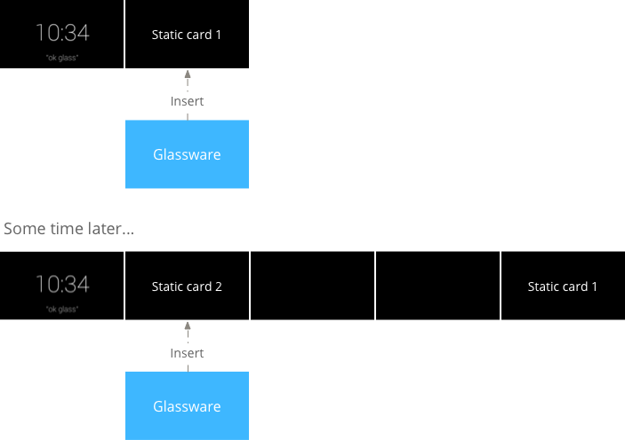
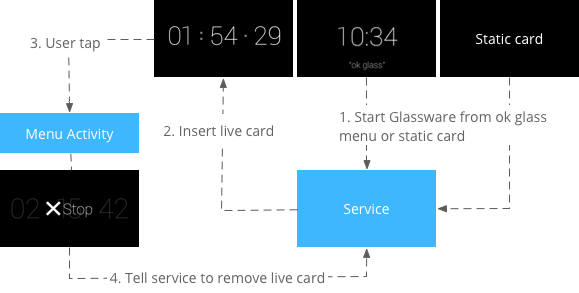
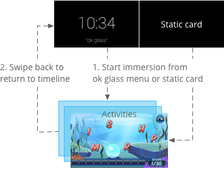
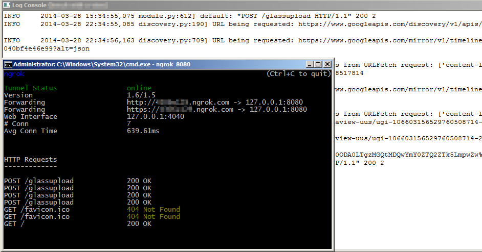
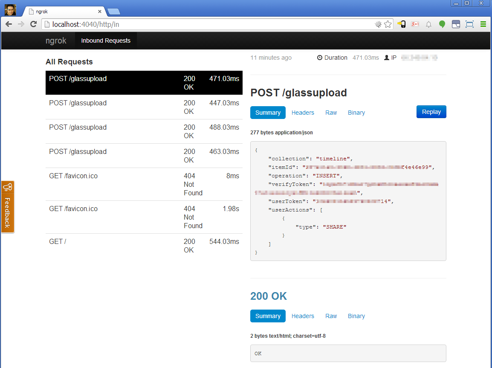

Welcome to Glass! This is my very first timeline card insert.
Mirror API and beyond
GDG Oakdale
Justin Ribeiro
justin@stickmanventures.com
@justinribeiro +Justin Ribeiro justinribeiro
Slides: http://goo.gl/1O5JxR
What are we talking about today
- Choices: Patterns and what nots
- Dive into Mirror API
- Making Mirror do more with App Engine
- GDK and the web: oh, it's a thing
Glass: not your average screen
- You should be designing for Glass
- Direct ports = not a great choice
- Read-Learn-Expand: Design Principles
Understanding the patterns
- Periodic
- Ongoing task
- Immersion
Periodic
- Insert timeline cards into the timeline without invocation
- Good case for notifications from an remote service
- Most common case for Mirror API
From Google's Glass Design Docs - Periodic
Ongoing task
- Long running live cards
- User can leave/return as needed
- Only the GDK
From Google's Glass Design Docs - Ongoing
Immersion
- Take over the timeline experience
- Users leave by swiping down
- Only the GDK (Android activities)
From Google's Glass Design Docs - Ongoing
What if my app doesn't fit the pattern?
- Consider your end goal for your application
- GDK: real-time, offline, access to the hardware
- Mirror API: platform indepent, common infratructure, use built-in functionality
- Hybrid approaches: Mirror card adds menu item that invokes intent to start
There is no one answer
- OH: "Java is the only way to write for Glass".
- OH: "Mirror API isn't powerful".
Both statements above = NOT TRUE
Decide for yourself, don't let others decide for you.
Only you know your goal and spec.
Jumping in to the Mirror API
- You're platform independent! You can choose your language and platform.
- You can make raw requests or for simplier access utilize the Google APIs Client Libs for your language
Mirror API Setup
- Create a project in the Google Developer Console (https://console.developers.google.com/project)
- Enable the Mirror API and the Google+ API
Why Google+ API?
- You need a method to authenticate users
- Older userinfo.profile scope is deprecated (End of support: September 2014)
- See https://developers.google.com/+/api/auth-migration#oauth2login
OAuth
- Create your Client ID for you app under APIs & auth > Credentials
- You can set the Redirect URI's to wherever your project will be dev/deployed
Great! Let's fire something up!
- Doing the sign in - Google+ Sign In button
- Button implements JavaScript hooks in client side that call our server
connectServer: function() {
console.log(this.authResult.code);
$.ajax({
type: 'POST',
url: "//" + window.location.host + '/connect?state=' + this.state,
contentType: 'application/octet-stream; charset=utf-8',
success: function(result) {
console.log(result);
},
processData: false,
data: this.authResult.code
});
}
Server handles the tokens
try:
user_credentials = _oauth_flow().step2_exchange(request.data)
except FlowExchangeError:
response = make_response(json.dumps('Failed to upgrade the authorization code.'), 401)
response.headers['Content-Type'] = 'application/json'
return response
# Set our session
session['credentials'] = user_credentials
session['user_id'] = user_credentials.id_token['sub']
Once we have tokens we get into Mirror API
- Timeline
- Menu
- Subscriptions
I thought the Mirror API had more?
Yes, it does. But let's dive into the basics first.
The timeline and you: Insert a card
- Timeline consists of cards or various types and styles
- Inserting a welcome card with a user auth'ed Mirror service
mirror_service = _authorized_mirror_service(user_credentials)
mirror_service.timeline().insert(body={
'notification': {'level': 'DEFAULT'},
'text': 'Welcome to Glass! This is my very first timeline card insert.'
).execute()
Timeline cards have lots of options
- HTML (see Style Guidelines)
mirror_service.timeline().insert(body={
'notification': {'level': 'DEFAULT'},
'html': 'Timeline cards: more options!
- Location
mirror_service.timeline().insert(body={
'notification': {'level': 'DEFAULT'},
'location': {
'latitude': 37.7692,
'longitude': 120.8569,
"displayName": "Season 6 Dreams Meetup",
"address": "Group Study Room F, Greendale Community College"
}
).execute()
Timeline cards: more options!
- Payload
mirror_service.timeline().insert(body={
'notification': {'level': 'DEFAULT'},
'text': 'Video time!',
'payload': 'http://mymystical.url/video.mp4',
'menuItems': [{'action': 'PLAY_VIDEO'}]
).execute()
Was that a Menu Item in that last example?
- Menu options give uses the ability to act on a timeline card
- Lots of built in options: REPLY, DELETE, READ_ALOUD, NAVIGATE, OPEN_URI and many more
- Can set custom menu options with CUSTOM that callback to a subscription
A basic MenuItem example
mirror_service.timeline().insert(body={
'notification': {'level': 'DEFAULT'},
'text': 'Timeline card with a couple menu options.',
'menuItems': [
{'action': 'CUSTOM', 'id': 'my-id', 'values': [ { 'displayName': "My Menu Item" } ] },
{'action': 'DELETE'}]
}).execute()
From Menu Actions to Subscriptions
- When a user acts on a menu item, we can listen for those action via a Subscription
- We set a callbackUrl that allows our application to receive a POST notification from the Mirror API.
A sample subscription for timeline
mirror_service.subscriptions().insert(body={
'collection': 'timeline',
'userToken': user_id,
'verifyToken': 'something_only_you_know',
'callbackUrl': 'https://my-project-id.appspot.com/myGlassCallback',
'operation': ['UPDATE']
}).execute()
Breaking it down
- collection: timeline or location
- userToken: something to id your user
- verifyToken: something only you know to verify notification
- operation: UPDATE, INSERT, DELETE
Then there's callbackUrl
ngork for the win
- Allows you to create a reverse tunnel
- Gives you an nice web panel to see incoming requests
- Gives you an SSL endpoint
~ $ ngrok -authtoken YOURTOKEN TARGETPORT
~ $ ngrok 8080
Ngrok in action
Ngrok viewing Mirror callback data
The code change is tiny
mirror_service.subscriptions().insert(body={
'collection': 'timeline',
'userToken': user_id,
'verifyToken': 'something_only_you_know',
'callbackUrl': 'https://RANDOM.ngrok.com/myGlassCallback',
'operation': ['UPDATE']
}).execute()
That's the crash course
I must do more!
Making Mirror shine
- Mirror has a lot of power, we can send all kinds of sticky, relevent data
- But how do we do that?
- To the samples!
Request: How do you send a card daily?
- Daily sort of jobs generally require cron
- If we're on our own boxes, we could schedule a script in crontab
- If we're on App Engine, we can use App Engines Cron
A simple App Engine Cron job
@glassdailycard.route('/dailyjob')
def dailyjob():
today = datetime.date.today()
query_get_todays_card = CronCards.query(CronCards.date == today)
result_get_todays_card = query_get_todays_card.get()
# Do we have a card to send today?
if result_get_todays_card is not None:
timelinecard_body = {
'notification': {'level': 'DEFAULT'},
'text': result_get_todays_card.card,
'menuItems': [{'action': 'DELETE'}]
}
query_get_users = UserProperties.query()
for user in query_get_users.fetch():
user_credentials = _credentials_for_user(user.key.id()).get()
_authorized_mirror_service(user_credentials).timeline().insert(body=timelinecard_body).execute()
response = make_response("{}", 200)
response.headers['Content-Type'] = 'application/json'
return response
glass-daily-task
- Simple starter project that shows basics of using App Engine Cron
- Uses Google+ Sign-In
- Repo: justinribeiro/glass-daily-task
Request: How do you send a card random in future?
- Generally requires a work queue of some type
- If we're on our own boxes, we could use beanstalkd
- If we're on App Engine, we can use App Engines Push Task Queue
A simple App Engine Cron job
@glasstaskfuture.route('/glassCallback', methods=['POST'])
def glassCallback():
"""Our callback when the use selects out CUSTOM menu option on the start card."""
notification = request.data
if random.choice([True, False]):
# we're going to send it along to the task queue
google.appengine.api.taskqueue.add(
url='/taskHandler',
payload=notification,
countdown=60)
else:
now = datetime.datetime.now()
future = now + datetime.timedelta(0,60)
google.appengine.api.taskqueue.add(
url='/taskHandler',
payload=notification,
eta=future)
# It's cool Mirror API
#
# Remember, we must return 200 as quickly as we can!
#
return('OK')
glass-task-future
- Simple starter project that shows basics of using App Engine Task Queue with a subscription callback
- Uses Google+ Sign-In
- Repo: justinribeiro/glass-task-future
Request: Glass to the web
- Lots of ways to do this
- I heart the MQTT - let's use a broker!
- Glass > Broker > WebSocket > You Browser
glass-gdk-timer-mqtt
- Modified Glass GDK timer example to use Eclipse Paho
- Connects to remote Broker on EC2 (Mosquitto)
- WebSocket created in python via pywebsocket
- Connected to web via jquery-websocket-callback
- Repo: justinribeiro/glass-gdk-timer-mqtt
Further reading / resources
- My Articles (PHP) @ Safari Books: #1, #2, #3
- More Writing @ My Blog
- Google Developers - Glass, StackoverFlow